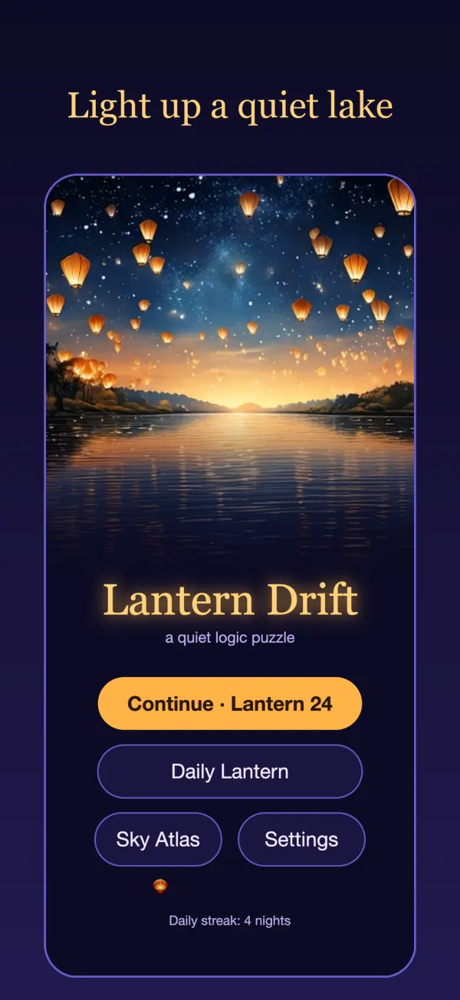
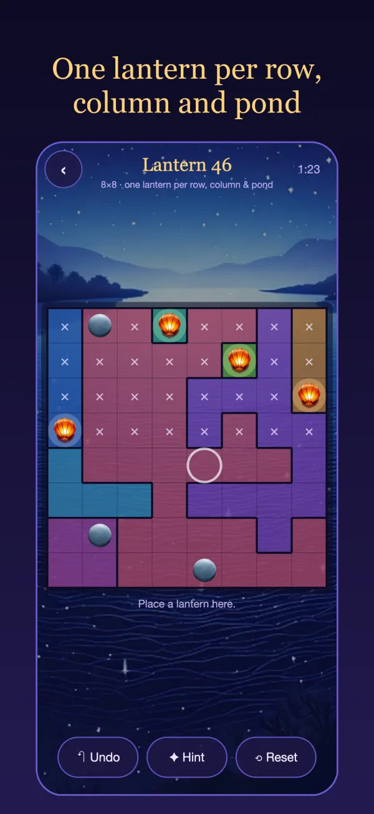
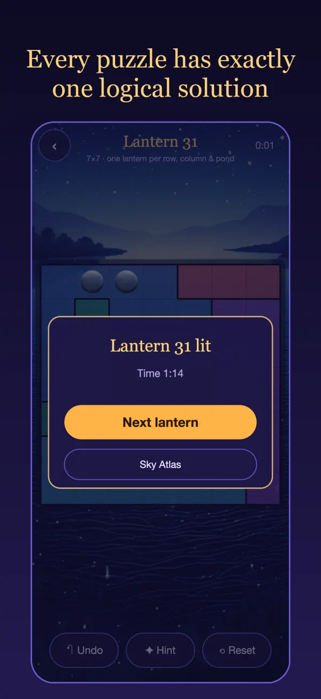
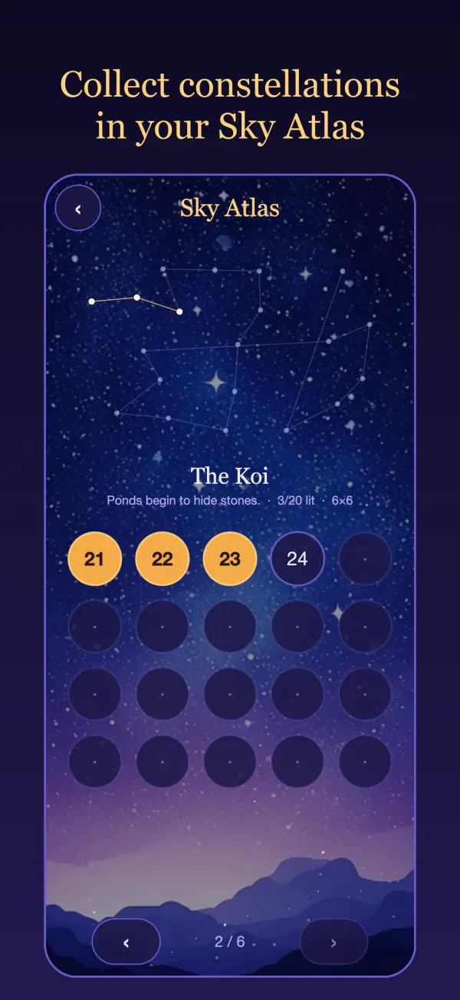

Lantern Drift
A quiet logic puzzle for iPhone. Light one lantern in every row, column and pond.




How to play
Place lanterns on the lake so that every row, every column and every colored pond holds the same number of lanterns — one, or two in ★★ levels.
- Every row holds exactly one lantern.
- Every column holds exactly one lantern.
- Every pond holds exactly one lantern.
- Lanterns can never touch each other, not even diagonally.
Controls
Tap a cell once to mark it with ×, twice to place a lantern, and a third time to clear it. Drag across cells to mark many × at once.
Every puzzle has exactly one solution and can be solved by logic alone — no guessing needed.
Questions
Where is my progress saved?
Your progress, best times, daily streak and settings are stored only on your iPhone. Deleting the app removes them.
Does it need an internet connection?
No. Lantern Drift works fully offline, including the Daily Lantern.
I'm stuck on a puzzle.
Use a hint, or turn on mistake highlighting in Settings to see rule breaks as you play. Undo is unlimited.
Does it work on iPhone Duo?
Yes. The board adapts when you fold or unfold the screen.
Support
Found a bug or have a question? Please open an issue on GitHub and we will get back to you.
Privacy
Lantern Drift collects no data. Read the full privacy policy.